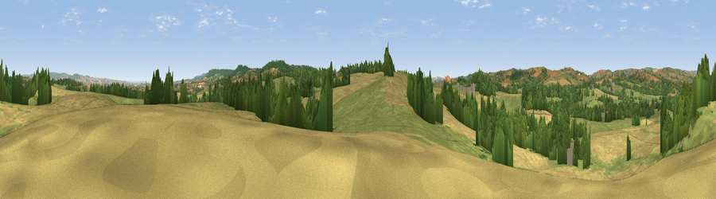

Viewpoint near Holywell Lake
#17555 in England · top 34% of its area beats it · near Holywell LakeThe view, rendered

A 360° render of this exact spot computed from the terrain model, tree cover and land cover — summer colours, afternoon light, calibrated against photographs of famous viewpoints. Real trees, hedges and buildings will differ in detail.
The panorama
Grey silhouette: terrain skyline in each direction (720 bearings, Earth curvature and refraction included). Dashed green: skyline with trees (+15 m) and buildings (+8 m) as obstacles. Blue strip: how far the ground is visible on each bearing.
Where the view opens
Wedge length = distance to the farthest visible ground on that bearing (vegetation-aware). Rings at 10, 25 and 50 km.
What fills the view
44% grassland · 37% cropland · 17% woodland · 1% built-up
Angular shares of the visible panorama (visual magnitude), not map area. Landscape diversity 0.47 (0–1 Shannon).
Key numbers
More beautiful places nearby
The staircase of upgrades: each row has a higher view potential than everything closer. Driving times are estimates from straight-line distance, calibrated against real road routing — check an actual route before setting out.
| Place | Direction | Drive | Score |
|---|---|---|---|
| Viewpoint near Ashbrittle | W · 3 km | ~8 min | 59.3 |
| Viewpoint near Sampford Arundel | SE · 4 km | ~9 min | 68.8 |
| Viewpoint near Sampford Arundel | SE · 4 km | ~10 min | 72.3 |
| Wellington Hill | ESE · 5 km | ~12 min | 74.9 |
| Viewpoint near Wiveliscombe | NNW · 6 km | ~13 min | 75.1 |
| Viewpoint near Pitminster | ESE · 11 km | ~21 min | 77.3 |
| Viewpoint near Elworthy | N · 15 km | ~27 min | 79.2 |
| Cothelstone Hill | NE · 16 km | ~29 min | 82.1 |
50.97198, -3.29708 · source: screening · position refined by local search. Computed location — check access rights before visiting.